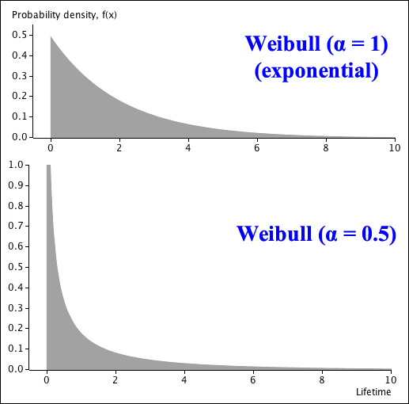
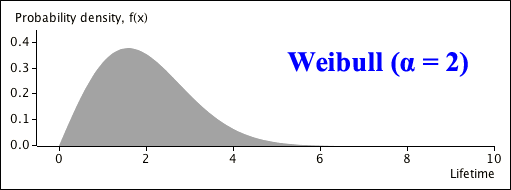

If you don't want to print now,
Poisson processes were introduced to model events that happen at random over time. It is also applicable to "events" that arise on other 1-dimensional continua such as flaws in a length of fabric.
Poisson processes can also be generalised to a 2-dimensional surface or 3-dimensional volume. For example, a 2-dimensional Poisson process might be used to model the location of items (such as animals or plants) in a study area. A Poisson process assumes that
A homogeneous Poisson process also assumes that
Poisson distribution
In any homogeneous Poisson process with rate \(\lambda\) events per unit size, the number of events in a period of time (or length or area) of size \(t\) has a \(\PoissonDistn(\lambda t)\) distribution.
Location of houses
West of Tokyo lies a large alluvial plain, dotted by a network of farming villages. A researcher analysed the positioning of the 911 houses making up one of those villages. The area studied was a rectangle, 3km by 4km. A grid was superimposed over a map of the village, dividing its 12 square kilometres into 1200 plots, each 100 metres on a side. The number of houses located on each of those plots is displayed in the 30 × 40 matrix shown below.
| 2221010012000012010122011201111211201202 0201201112201100010102201221210010102012 1011001011101011012020013012102112001022 0111020120002200010012000100010900011111 1200000000102022012101110301201111001031 1310101000002202001001000012111210213111 0100010101201311413101100000002220120301 0010100100130010010010220200121220011001 0110110113113010201000133200001010100010 0000011200152000020021010020001001000120 0200111011102142101220112100001220000000 0001101000012220001013120000021200020111 0100120000000110111121113010110141120102 0001111011000012011113021000020003020112 0110001120010010020001100011100002002100 3411031000200010121001410022000101110440 0010011111100102032022310011013001101110 1101010021002200215200000000100122002101 0301000200020000010200001100200000013001 0110201000001100101000112110000110100212 1000110011100210000130221401001030011010 0211011000110031100101025211012001101200 0000020111200112101003214502111120200101 0011200010011000002001221003311010000010 1011001122110000010021100000110011002002 0011111000221200021000001103001207102002 0111122200203101010010001113101021210001 0210002120000010301100010010002211010110 0000100200000001100110100110111201021011 2001200000100112132000000000100011110210 |
If houses are located in this village as a homogeneous Poisson process, then these 1,200 counts will be a random sample from a \(\PoissonDistn(\lambda)\) distribution in which \(\lambda\) is the rate of houses per \(10,000\text{ m}^2\).
The assumptions underlying a homogeneous Poisson process are sometimes violated.
These two problems often result in a more variable counts than would be expected from a Poisson distribution — called overdispersion.
Location of houses
For a homogeneous Poisson process with rate \(\lambda\) houses per unit area, the MLE for \(\lambda\) is
\[ \hat{\lambda} \;\;=\;\; \overline{X} \;\;=\;\; \frac {911}{1200} \;\;=\;\; 0.7592 \]The table below shows the sample proportions for each of the counts and the best-fitting Poisson probabilities using \(\hat{\lambda}\) above.
| No of houses, \(x\) |
Sample proportion |
Poisson probability, \(p(x)\) |
|---|---|---|
| 0 | 0.4867 | 0.4681 |
| 1 | 0.3317 | 0.3553 |
| 2 | 0.1400 | 0.1349 |
| 3 | 0.0292 | 0.0341 |
| 4 | 0.0075 | 0.0065 |
| 5 | 0.0033 | 0.0010 |
| 6 | 0.0000 | 0.0001 |
| 7 | 0.0008 | 0.0000 |
| 8 | 0.0000 | 0.0000 |
| 9 | 0.0008 | 0.0000 |
| Total | 1.0000 | 1.0000 |
Zeros and large counts arise more often than expected from a Poisson distribution.
The sample variance is \(S^2 = 0.8902\) which is greater than the sample mean, \(\overline{X} = 0.7592\). Since the mean and variance of a Poisson distribution are equal, this also suggests some overdispersion in the distribution.
Model for overdispersion
The Poisson distribution's variance always equals its mean. Another distribution with two parameters is needed to allow the variance to be greater than the mean.
Definition
A random variable, \(X\), is said to have a generalised negative binomial distribution
\[ X \;\;\sim\;\; \NegBinDistn(\kappa, \pi) \]if its probability function is
\[ p(x) \;\;=\;\; \begin{cases} \displaystyle \frac{\Gamma(\kappa + x)}{x! \; \Gamma(\kappa)} \pi^{\kappa} (1-\pi)^x &\text{for }x = 0, 1, 2, \dots \\[0.2em] 0 & \text{otherwise} \end{cases} \]where \(\kappa \gt 1\) and \(0 \le \pi \lt 1\). The two parameters \(\kappa\) and \(\pi\) are usually two unknown.
This is a generalisation of the negative binomial distribution for the number failures before the \(\kappa\)'th success in a sequence of independent success/failure trials with probability \(\pi\) of success, but we now allow non-integer values of \(\kappa\).
Mean and variance
The mean and variance of the generalised negative binomial distribution are
\[ E[X] = \frac {\kappa(1-\pi)} \pi \spaced{and} \Var(X) = \frac {\kappa(1-\pi)} {\pi^2} \](Proved in full version)
From these formulae,
\[ \Var(X) \;=\; E[X] \times \frac 1 {\pi} \]Since \(\pi \lt 1\), \(\Var(X) \gt E[X]\), allowing it to model data with overdispersion.
Asymptotic distribution
If \(\kappa \to \infty\) and \(\pi \to 1\) simultaneously with \(\displaystyle \frac{\kappa(1-\pi)}{\pi} = \lambda\), the negative binomial distribution approaches a \(\PoissonDistn(\lambda)\) distribution.
(Not proved)
This shows that the negative binomial distribution can be made arbitrarily close to a Poisson distribution with appropriate choice of \(\kappa\) and \(\pi\).
Justification for the negative binomial distribution
The negative binomial distribution is often simply used as an empirical model with the flexibility to model overdispersed count data.. However it can also be theoretically derived in two different ways:
Shape of distribution
We now illustrate the additional flexibility provided by the negative binomial.
The top diagram shows the distribution of the number of events in a homogeneous Poisson process in which \(E[X] = \Var(X) = 3\).
The two negative binomial distributions also have \(E[X] = 3\), but \(\Var(X) \gt 3\), so they might be used to fit over-dispersed counts with more zeros and high values than would be expected from a homogeneous Poisson process.
To use a binomial distribution to model the number of successes in a sequence of success/failure trials, we must assume that
If \(\pi\) varies or the results of successive trials are positively related, there is more chance of a very low or very high count than a binomial distribution would give — overdispersion.
Sex of babies
The number of male children among the first 12 children in 6,115 families of size 13, were recorded from hospital records in 19th century Saxony. If the sexes of different children were independent and each child had the same probability of being male, \(\pi\), this would be a random sample from a \(\BinomDistn(n=12, \; \pi)\) distribution.
Using maximum likelihood, \( \hat{\pi} \;=\; 0.5192\) and the table below shows the resulting binomial probabilities alongside the sample proportions.
| Number of males, \(x\) |
Sample proportion |
Binomial probability, \(p(x)\) |
|---|---|---|
| 0 | 0.0005 | 0.0002 |
| 1 | 0.0039 | 0.0020 |
| 2 | 0.0170 | 0.0117 |
| 3 | 0.0468 | 0.0423 |
| 4 | 0.1096 | 0.1027 |
| 5 | 0.1689 | 0.1775 |
| 6 | 0.2196 | 0.2236 |
| 7 | 0.1818 | 0.2070 |
| 8 | 0.1356 | 0.1397 |
| 9 | 0.0782 | 0.0671 |
| 10 | 0.0296 | 0.0217 |
| 11 | 0.0074 | 0.0043 |
| 12 | 0.0011 | 0.0004 |
There were more families with 3 or fewer males and with 9 or more males than the binomial model would predict, indicating overdispersion.
The variance of the best binomial model is
\[ \Var(X) \;=\; 12 \times \hat{\pi} (1 - \hat{\pi}) \;=\; 2.996\]whereas the actual sample variance was 3.490, again indicating overdispersion.
This gives strong evidence that the assumptions underlying the binomial model do not hold. The most likely reason is that the probability of a child being male is not constant, but varies from family to family.
Model for overdispersion in success/failure data
A model that generalises the binomial distribution to allow for overdispersion is the beta-binomial distribution.
Definition
A random variable, \(X\), has a beta-binomial distribution if its probability function is
\[ p(x) \;\;=\;\; \begin{cases} \displaystyle {n \choose x} \frac {B(x + \alpha, n - x + \beta)}{B(\alpha, \beta)} &\text{for }x = 0, 1, 2, \dots, n \\[0.4em] 0 & \text{otherwise} \end{cases} \]where \(\alpha \gt 0\), \(\beta \gt 0\) and
\[ B(a, b) \;\;=\;\; \frac {\Gamma(a)\Gamma(b)}{\Gamma(a+b)} \]The following are given without proof:
Mean and variance
The mean and variance of the beta-binomial distribution are
\[ E[X] = \frac {n\alpha}{\alpha + \beta} \spaced{and} \Var(X) = \frac {n\alpha\beta}{(\alpha + \beta)^2}\times \frac {\alpha + \beta + n} {\alpha + \beta + 1} \]
If we write
\[ \pi = \frac {\alpha}{\alpha + \beta} \spaced{so} (1-\pi) = \frac {\beta}{\alpha + \beta} \]
then
\[ E[X] = n\pi \spaced{and} \Var(X) = n\pi (1 - \pi) \times \frac {\alpha + \beta + n} {\alpha + \beta + 1} \]
The distribution's variance is \(\frac {\alpha + \beta + n} {\alpha + \beta + 1}\) times the variance of the binomial distribution with the same mean. Since this factor is greater than 1, the beta-binomial distribution can be used as a model when there is overdispersion.
Probabilities in Excel
The following Excel functions help evaluate beta-binomial probabilities:
| Maths function | In Excel |
|---|---|
| \(\displaystyle {n \choose x}\) | =COMBIN(n, x) |
| \(\Gamma(k)\) | =EXP(GAMMALN(k)) |
Relationship to binomial distribution
The beta-binomial distribution can be made arbitrarily close to a binomial distribution with suitable choice of \(\alpha\) and \(\beta\).
Asymptotic distribution
If \(\alpha \to \infty\) and \(\beta \to \infty\) simultaneously with \(\dfrac {\alpha}{\alpha + \beta} = \pi\), the beta-binomial distribution approaches a \(\BinomDistn(n, \pi)\) distribution.
Shape of distribution
The following diagram shows a few distributions that could be used for the number of successes in \(n = 10\) success/failure trials. The top distribution is the binomial distribution.
The three beta-binomial distributions all have the same mean as the binomial distribution, but their variances are greater — they have more chance of 0 or 10 successes.
Lifetime distributions
The \(\ExponDistn(\lambda)\) distribution is an appropriate model for the lifetime of an item if its hazard function is constant, \(h(x) = \lambda\). This is unrealistic in most applications — usually items become more likely to fail as they age and wear down.
The Weibull distribution is a more general model that allows the hazard rate to increase or decrease over time.
Definition
A random variable \(X\) is said to have a Weibull distribution with parameters \(\alpha \gt 0\) and \(\lambda \gt 0\),
\[ X \;\;\sim\;\; \WeibullDistn(\alpha,\; \lambda) \]if its probability density function is
\[ f(x) \;\;=\;\; \begin{cases} \alpha \lambda^{\alpha} x^{\alpha - 1} e^{-(\lambda x)^{\alpha}} & x \gt 0 \\[0.4em] 0 & \text{otherwise} \end{cases} \]The Weibull distribution's hazard function has a particularly simple form.
Weibull hazard function
If a random variable \(X\) has a \(\WeibullDistn(\alpha, \lambda)\) distribution, its hazard function is
\[ h(x) \;\;=\;\; \alpha \lambda^{\alpha} x^{\alpha - 1} \](Proved in full version)
Since \(h(x) \;\;\propto\;\; x^{\alpha - 1}\), the Weibull distribution can be used as a model for items that either deteriorate or improve over time.
Mean and variance of Weibull distribution
If a random variable \(X\) has a Weibull distribution with probability density function
\[ f(x) \;\;=\;\; \begin{cases} \alpha \lambda^{\alpha} x^{\alpha - 1} e^{-(\lambda x)^{\alpha}} & x \gt 0 \\[0.4em] 0 & \text{otherwise} \end{cases} \]then its mean and variance are
\[ E[X] \;=\; \frac 1 {\lambda} \Gamma\left(1 + \frac 1 {\alpha}\right) \spaced{and} \Var(X) \;=\; \frac 1 {\lambda^2} \left( \Gamma\left(1 + \frac 2 {\alpha}\right) - \Gamma\left(1 + \frac 1 {\alpha}\right)^2\right) \](Proved in full version)
We now show how the shape of the Weibull distribution is affected by its two parameters. The two distributions below both have mean \(E[X] = 2\).

When \(\alpha = 0.5\),
\[ h(x) \;\;\propto\;\; x^{\alpha - 1} \;\;=\;\; \frac 1{\sqrt{x}}\]When \(x \approx 0\), the hazard rate is extremely high, making the item very likely to fail near the start of its life. However the hazard rate drops as the item gets older (as \(x\) increases) so as the item survives longer, it becomes less likely to fail — some items survive very long times, well beyond the upper end of the axis in the diagram.

In this Weibull distribution, the hazard rate starts low then increases over time.
Probabilities for the Weibull distribution are usually found from the cumulative distribution function.
Cumulative distribution function
If \(X \sim \WeibullDistn(\alpha, \lambda)\) its cumulative distribution function is
\[ F(x) \;\;=\;\; P(X \le x) \;\;=\;\; 1 - e^{-(\lambda x)^{\alpha}} \](Proved in full version)
Given values of \(x\), \(\alpha\) and \(\lambda\), these probabilities can be evaluated on a scientific calculator. Excel also has a function to evaluate cumulative Weibull probabilities, but its third parameter is the inverse of \(\lambda\), rather than \(\lambda\) itself. The cumulative probability could be found by typing into a spreadsheet cell
=WEIBULL.DIST( \(x\), \(\alpha\), \(1/\lambda\), true )
Although the parameter \(\alpha\) has a meaningful interpretation since \(h(x) \propto x^{\alpha - 1}\), the value of the parameter \(\lambda\) is not easily interpreted. The mean lifetime of the items is an easier value to interpret than \(\lambda\) itself,
\[ E[X] \;=\; \frac 1 {\lambda} \Gamma\left(1 + \frac 1 {\alpha}\right) \]Question
If an item's hazard rate is proportional to the square root of its age, and its mean lifetime is 3 years, what is the probability that it will survive for longer than 10 years?
(Solved in full version)
We now give an example in which the hazard rate decreases over time.
Question
If the item's hazard rate was inversely proportional to the square root of its age, and its mean lifetime is 3 years, what would be the corresponding probability of surviving for longer than 10 years? 40 years?
(Solved in full version)
We now describe a family of distributions that can be used to model "quantity" variables — ones that can only take positive values. The Gamma distribution is a generalisation of the \(\ErlangDistn(k,\; \lambda)\) distribution that allows non-integer values for the parameter \(k\). By convention, Erlang parameters \(k\) and \(\lambda\) are denoted by the symbols \(\alpha\) and \(\beta\) in Gamma distributions.
Definition
A random variable \(X\) is said to have a Gamma distribution with parameters \(\alpha \gt 0\) and \(\beta \gt 0\),
\[ X \;\;\sim\;\; \GammaDistn(\alpha,\; \beta) \]if its probability density function is
\[ f(x) \;\;=\;\; \begin{cases} \dfrac {\beta^\alpha }{\Gamma(\alpha)} x^{\alpha - 1} e^{-x\beta}& \quad\text{if }x \gt 0 \\ 0 & \quad\text{otherwise} \end{cases} \]The exponential distribution is a special case of the gamma distribution when \(\alpha = 1\). The distribution becomes increasingly skew as \(\alpha\) decreases from this value. The two Gamma distributions below both have mean \(E[X] = 2\).

When \(\alpha\) increases, the mode of the distribution (where its density is highest) increases from zero and the distribution's shape becomes more symmetric. The two Gamma distributions below again both have \(E[X] = 2\).
Comparison of Gamma and Weibull distributions
The Gamma and Weibull distributions are both generalisations of the exponential distribution — exponential distributions are special cases when \(\alpha = 1\) and both can be used as models for lifetime data. The main differences between them arise in the tails of the distributions, especially when \(\alpha\) is positive.
| \(\WeibullDistn(\alpha,\; \lambda)\): | \(f(x) \propto x^{\alpha - 1} e^{-(\lambda x)^{\alpha}}\) |
| \(\GammaDistn(\alpha,\; \beta)\): | \(f(x) \propto x^{\alpha - 1} e^{-\beta x}\) |
When \(\alpha \gt 1\), the Weibull distribution's upper tail decreases much faster than the Gamma distribution's upper tail, so the Gamma distribution has a longer upper tail (and is more skew).
In many applications, the Gamma distribution's longer tail matches what is seen (or expected) in sample data.
Cumulative distribution function
The cumulative distribution function of the Gamma distribution is
\[ F(x) \;\;=\;\; P(X \le x) \;\;=\;\; \int_0^x {\frac {\beta^\alpha }{\Gamma(\alpha)} u^{\alpha - 1} e^{-u\beta}} \;du \]This integral cannot be simplified and can only be evaluated numerically. In Excel, the following function can be used.
= GAMMA.DIST( \(x\), \(\alpha\), \(\beta\), true)
Question
If a random variable, \(X\), has a Gamma distribution
\[ X \;\;\sim\;\; \GammaDistn(\alpha = 7,\; \beta = 12) \]what is the probability of getting a value between 0.5 and 1.0?
(Solved in full version)
Quantiles from Gamma distributions
In a similar way, there is no algebraic formula for the quantiles of a Gamma distribution, but computer algorithms are available to find them numerically. To find the value \(x\) such that \(F(x) = q\), the following Excel function can be used.
= GAMMA.INV( \(q\), \(\alpha\), 1/\(\beta\))
Question
If a random variable, \(X \sim \GammaDistn(\alpha = 7,\; \beta = 12)\), what is the lower quartile of its distribution?
(Solved in full version)
We now give formulae for the mean and variance of the Gamma distribution.
Mean and variance
If a random variable \(X\) has a Gamma distribution with probability density function
\[ f(x) \;\;=\;\; \begin{cases} \dfrac {\beta^\alpha }{\Gamma(\alpha)} x^{\alpha - 1} e^{-x\beta}& \text{if }x \gt 0 \\ 0 & \text{otherwise} \end{cases} \]then its mean and variance are
\[ E[X] \;=\; \frac{\alpha}{\beta} \spaced{and} \Var(X) \;=\; \frac{\alpha}{\beta^2} \](Proved in full version)
The sum of independent \(\ErlangDistn(k_1,\; \lambda)\) and \(\ErlangDistn(k_2,\; \lambda)\) random variables has an \(\ErlangDistn(k_1 + k_2,\; \lambda)\) distribution, and the same holds for the sum of Gamma random variables, provided their second parameters are equal.
Additive property of Gamma distributions
If \(X_1 \sim \GammaDistn(\alpha_1,\; \beta)\) and \(X_2 \sim \GammaDistn(\alpha_2,\; \beta)\) are independent, then
\[ X_1 + X_2 \;\;\sim\;\; \GammaDistn(\alpha_1 + \alpha_2,\; \beta) \](Not proved)
The Central Limit Theorem can be used to give a normal approximation to the Gamma distribution when \(\alpha\) is large.
Asymptotic normal distribution
The shape of the \(\GammaDistn(\alpha,\; \beta)\) distribution approaches that of a normal distribution as \(\alpha \to \infty\)
(Proved in full version)
Occasionally variables can only take values within a restricted range. The family of beta distributions is flexible enough to model many variables that must take values between zero and one.
Definition
A random variable \(X\) is said to have a Beta distribution with parameters \(\alpha \gt 0\) and \(\beta \gt 0\),
\[ X \;\;\sim\;\; \BetaDistn(\alpha,\; \beta) \]if its probability density function is
\[ f(x) \;\;=\;\; \begin{cases} \dfrac {\Gamma(\alpha +\beta) }{\Gamma(\alpha)\Gamma(\beta)} x^{\alpha - 1} (1 - x)^{\beta - 1}& \text{if }0 \lt x \le 1 \\[0.4em] 0 & \text{otherwise} \end{cases} \]A special case of the beta distribution arises when \(\alpha = \beta = 1\):
\[ \BetaDistn(\alpha = 1,\; \beta = 1) \;\;\equiv\;\; \RectDistn(0, 1) \]Larger values of the parameters decrease the spread of the distribution. The following Beta distributions all have mean \(E[X] = 0.4\).
On the other hand, smaller values "push the distribution towards zero and one".

Deriving the mean and variance of the Beta distribution requires the following result.
A useful integral
For any constants \(a \gt 0\) and \(b \gt 0\),
\[ \int_0^1{x^{a - 1} (1 - x)^{b - 1}} dx \;\;=\;\; \frac{\Gamma(a) \Gamma(b)}{\Gamma(a + b)} \](This result can be used to prove that the beta distribution's pdf integrates to 1.)
Mean and variance of beta distribution
If a random variable, \(X\), has a beta distribution with pdf
\[ f(x) \;\;=\;\; \begin{cases} \dfrac {\Gamma(\alpha + \beta) }{\Gamma(\alpha)\Gamma(\beta)} x^{\alpha - 1} (1 - x)^{\beta - 1}& \text{if }0 \lt x \le 1 \\ 0 & \text{otherwise} \end{cases} \]its mean and variance are
\[ E[X] \;=\; \frac{\alpha}{\alpha + \beta} \spaced{and} \Var(X) \;=\; \frac{\alpha\beta}{(\alpha + \beta)^2(\alpha + \beta + 1)} \](Proved in full version)
The family of normal distributions is flexible enough to be used as a model for many practical variables.
Definition
A random variable, \(X\), is said to have a normal distribution,
\[ X \;\; \sim \; \; \NormalDistn(\mu,\; \sigma^2) \]if its probability density function is
\[ f(x) \;\;=\;\; \frac 1{\sqrt{2\pi}\;\sigma} e^{- \frac{\large (x-\mu)^2}{\large 2 \sigma^2}} \qquad \text{for } -\infty \lt x \lt \infty \]Normal distributions are symmetric and the two parameters only affect the centre and spread of the distribution.

Standard normal distribution
Definition
A standard normal distribution is one whose parameters are \(\mu = 0\) and \(\sigma = 1\),
\[ Z \;\; \sim \; \; \NormalDistn(0,\; 1) \]A random variable, \(Z\) with a standard normal distribution is often called a z-score.
If \(Z\) has a standard normal distribution, its pdf has a particularly simple form:
\[ f(z) \;\;=\;\; \frac 1{\sqrt{2\pi}} e^{- \frac{\large z^2}{\large 2}} \qquad \text{for } -\infty \lt x \lt \infty \]The mean and variance of a general normal distribution, can be found from those of the standard normal distribution.
Mean and variance of standard normal distribution
If \(Z \sim \NormalDistn(0,\; 1)\), its mean and variance are
\[ E[Z] \;=\; 0 \spaced{and} \Var(Z) \;=\; 1 \](Proved in full version)
A change of variable, \(z = \frac {x-\mu}{\sigma}\), can be used to find the mean and variance of a general normal distribution from this result.
Mean and variance of a general normal distribution
If \(X \sim \NormalDistn(\mu,\; \sigma^2)\), its mean and variance are
\[ E[X] \;=\; \mu \spaced{and} \Var(X) \;=\; \sigma^2 \](Proved in full version)
This explain why the symbols "\(\mu\)" and "\(\sigma^2\)" are used for the normal distribution's two parameters.
The following diagram describes the probability density function of any normal distribution.
It can be used to add a scale appropriate to any values of \(\mu\) and \(\sigma\). For example, the pdf of a \(\NormalDistn(\mu=180, \sigma=10)\) distribution is

Z-scores
The number of standard deviations from the mean is called a z-score.
\[ Z = \frac {X-\mu} {\sigma} \]Z-scores have a standard normal distribution,
\[ Z \;\; \sim \; \; \NormalDistn(0,\; 1) \]Cumulative distribution function
The cumulative distribution function for a \(\NormalDistn(\mu,\; \sigma^2)\) distribution is
\[ F(x) \;\;=\;\; \int_{-\infty}^x {\frac 1{\sqrt{2\pi}\;\sigma} e^{- \frac{\large (u-\mu)^2}{\large 2 \sigma^2}}} du \]This integration cannot be performed algebraically, but numerical algorithms will find cumulative probabilities for you. For example, in Excel you can use the function
= NORM.DIST( \(x\), \(\mu\), \(\sigma\), true)
Normal probabilities from z-scores
Although probabilities for any normal distribution can be found as described above, an alternative method uses z-scores. This lets us find probabilities about a normal random variable using the standard normal distribution.

In Excel, this would be evaluated as
=NORM.S.DIST(z, true)
Although this offers few practical advantages when a computer is used,
We are sometimes given the value of the probability, \(P(X \le x)\) and need to find the value \(x\). If we are provided with a probability, \(p\), then the value \(x\) such that
\[ P(X \le x) = p \]is the \(p\)'th quantile of the distribution of \(X\). We now give an example to illustrate the use of quantiles for a normally distributed random variable.
Example
If the weight of a Fuji apple has the following normal distribution
\[ X \;\; \sim \; \; \NormalDistn(\mu=180, \sigma=10) \]what is the apple weight that will be exceeded with 95% probability? In other words, we want to find the apple weight \(x\) such that
\[ P(X \lt x) \;\;= \;\; 0.05 \]In terms of z-scores,
\[ P(X \lt x) \;= \; P\left(Z \lt \frac {x-180} {10}\right) \;= \; 0.05 \]Using the function "=NORM.S.INV(0.05)" in Excel, we can find that
\[ P(Z \lt -1.645) \;\;=\;\; 0.05 \]Translating back to the original units,
\[ x \;=\; 180 - 1.645 \times 10 \;=\; 163.55 \text{ grams} \]Two independent normal variables
For any two independent random variables, \(X\) and \(Y\), with means \(\mu_X\) and \(\mu_Y\) and variances \(\sigma_X^2\) and \(\sigma_Y^2\),
\[ \begin {align} E[aX + bY] & = a\mu_X + b\mu_Y \\[0.5em] \Var(aX + bY) & = a^2\sigma_X^2 + b^2\sigma_Y^2 \end {align} \]When \(X\) and \(Y\)have normal distributions, we can be more precise about the distribution's shape.
Linear function of independent normal variables
If \(X\) and \(Y\) are independent random variables,
\[ \begin {align} X \;&\sim\; \NormalDistn(\mu_X,\; \sigma_X^2) \\ Y \;&\sim\; \NormalDistn(\mu_Y,\; \sigma_Y^2) \end {align} \]then
\[ aX + bY \;\sim\; \NormalDistn(a\mu_X + b\mu_Y,\; a^2\sigma_X^2 + b^2\sigma_Y^2) \]Random sample
This can be extended to the sum of values in a normal random sample.
Sum of a random sample
If \(\{X_1, X_2, ..., X_n\}\) is a random sample of n values from a \(\NormalDistn(\mu,\; \sigma^2)\) distribution then,
\[ \sum_{i=1}^n {X_i} \;\sim\; \NormalDistn(n\mu,\; n\sigma^2) \](Proved in full version)
A similar result holds for the mean of a random sample from a normal distribution.
Mean of a random sample
If \(\{X_1, X_2, ..., X_n\}\) is a random sample of n values from a \(\NormalDistn(\mu,\; \sigma^2)\) distribution then,
\[ \overline{X} \;\sim\; \NormalDistn\left(\mu,\; \frac {\sigma^2}{n}\right) \]We end this section with another important result that is stated here without proof.
Independence of sample mean and variance
If \(\{X_1, X_2, \dots, X_n\}\) is a random sample from a \(\NormalDistn(\mu, \sigma^2)\) distribution, the sample variance,
\[ S^2 \;=\; \frac {\sum_{i=1}^n {(X_i - \overline{X})^2}} {n-1} \]is independent of the sample mean, \(\overline{X}\).
Although we cannot prove independence with the statistical theory that we have covered so far, it can be demonstrated with a simulation. In the scatterplot below, each cross gives the mean and standard deviation from a random sample of 20 values from a \(\NormalDistn(\mu=12,\; \sigma^2 = 2^2)\) distribution.

The scatterplot is a fairly circular cloud of crosses, so there is no tendency for large sample standard deviations to be associated with either large or small sample means. This supports the independence of the sample mean and standard deviation.